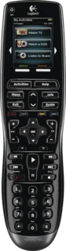

Harmony 900 Supported
2009 · touchscreen remote with RF blaster
Everything you could set up with Logitech's software:
- Devices and activities, including which device each button controls in an activity
- Every physical button, and the power plan: what turns on, in what order, and what turns off
- Input switching and channel entry for each device
- IR output per device: the remote's own emitter, or the RF blaster and its two mini emitters; new blasters can be paired
- Remote settings and the icons the remote shows